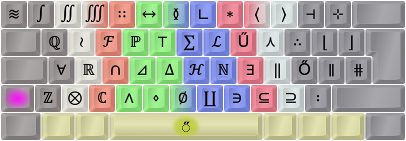
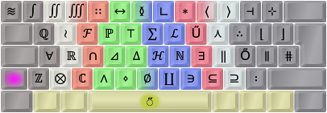

Symbolic Extend image:

My Extend mappings (Ext1 – Nav/Edit). Green, navigation; blue/circled, mousing; orange, multimedia; gray, system/misc.
This is my own preferred AltGr mapping layers (modifier lv3-4 in Linux terminology) for the Colemak layout. I've tried to add much functionality while keeping it intuitive. In particular, I want to be able to write different scripts and tech/maths symbols. Since the start, there's been some minor tweaks based on my experience and forum feedback, but it's been stable for a long time now.
Look inside my various layout files for comments and explanations, in addition to these main design goals:
See the Colemak[eD] page if you want to know more.

The Colemak [edition DreymaR] layout, using different lv3-4 mappings from Shai's default Colemak.
Shown on an ANSI keyboard with dead key emphasis (golden) and "FingerShui" color-coded proposed fingering.
Colemak-CAW[eD], using the Curl(DH)Angle-ISO and Wide(/) ergonomic mods like I do (see the next post).
Extend is like a special Shift key (usually the Caps key) that brings keys and functions close to the home position – as if you had extended your arms by magic.
This is My Favorite Mod next to Colemak itself! The ability to navigate and edit from the home position and its immediate surroundings is extremely powerful. It's like having part of the power of advanced editors like Vim ready in all situations. Plus a fully functional multimedia keyboard without sacrificing compactness. And more, much more.
Really, I cannot stress enough Just How Powerful Extend Is!!! once you understand its workings. It's miles ahead of most other "Fn key" layers, for several reasons including the home row modifiers which lead to an ocean of power chording possibilities. Most newcomers don't seem to get this at once, so I urge you to study my Extend topic a bit for your own sake. I realize that it may seem like much to learn one more thing, but it'll benefit you a lot. Furthermore, Extend can be learnt gradually and is much easier to learn than a new typing layout!

A chart of my Extend mappings (Ext1 – Nav/Edit). Green, navigation; blue/circled, mousing; orange, multimedia; gray, system/misc.
Here's the same image with symbolic labels like I use in the EPKL program; for more info see the Extend topic and my source files:
Symbolic Extend image:
My Extend mappings (Ext1 – Nav/Edit). Green, navigation; blue/circled, mousing; orange, multimedia; gray, system/misc.
The Linux/XKB and Windows/EPKL implementations are almost the same. EPKL couldn't yet support mapping to the shifted multimedia keys. Linux usually has poor support for mouse WheelLeft/Right scroll keys so the XKB mappings have a MouseKeys On/Off key on <LSGT> and a Compose/Multi key on Slash instead.
Holding down AltGr with the Extend modifier you get Extend2: A NumPad layer laid out pretty much like a standard one but with the top row moved around to fit existing keys:

Extend NumPad mappings (Ext2). Green, navigation; purple, NumPad; sepia, symbols; gray, system/misc.
Ideally you can map any modifier to be the Extend "Mod2"/"Mod3" which select between different Extend layers, and only need to hold the Extend key itself after choosing the layer. At the moment though, this works as it should with EPKL and TMK but not XKB.
There may be a need for navigating while entering numbers, but on the other hand KeyPad keys rarely use modifiers. Hence, I moved the nav block from its UNEI arrow cross to the WARS cross familiar to gamers. Number row keys 1-6 are mapped to their shifted symbols since these may be needed for numeric input, as are some other keys; the bracket keys cater for the parentheses in this layer which feels logical to me.
In the Windows/EPKL implementation there are two more Extend layers; see the (E)PKL topic. One has a set of kaomoji! ☆*:.｡. o(≧▽≦)o .｡.:*☆
Tips:
Some dead keys are almost empty: The doubleacute only caters for ő ű, and ring only caters for å ů ẘ ẙ. There's also a whole iota dead key that only concerns itself with Greek characters. I'm tempted to stuff something good into those cracks even if it's not an entirely logical thing to do (because the name of the dead key wouldn't reflect these extra mappings). If you use up a key mapping on a dead key it really shouldn't sit there taking up keyboard space for the meager purpose of providing 2-3 glyphs!
There are 19 dead keys in my Colemak[eD] layout. The common accents are there, together with a currency dead key on AltGr+4 and a Greek phonetic dead key on AltGr+5. Furthermore, some sparsely populated accent keys have been enhanced with extra content, such as superscripts/subscripts on acute/grave, fractions and negations on stroke/bar and ring symbols on ringabove. The most extensively reworked key is the double-acute which used to have only Uu and Oo and now contains a fairly rich set of math/science symbols (think of the double acute as akin to the equals and prime signs)! You really have to see them to believe them – I'll showcase some below but you can see them all using PKL (default Ctrl+Shift+1 for the help images):
01) Dot below
02) Hook, palatal hook
03) Horn, retroflex hook/tail
04) Currency:

05) Greek (phonetic):


06) Circumflex
07) Caron
08) Ogonek, comma below
09) Breve
10) Ring above, ring symbols, ligatures
11) Macron
12) Double-acute, math/science:
 

13) Umlaut/diaeresis
14) Tilde
15) Acute, superscripts


16) Grave, subscripts
17) Cedilla
18) Dot above
19) Stroke/bar, fractions


Note that the dead keys are designed to interact in clever ways through chaining: 'Ring' then 'angle' will produce 'arced angle', 'Tilde' with 'equals' will produce 'equal or approximately equal', Stroke with many symbols will produce slashed symbols (e.g., from 'identical to' you get 'not identical to') etc. The sequence you press the dead keys in may matter: Usually, start with the modifier(s) (such as 'stroke' for "not") then the symbol-producing key (such as 'maths' and then '=' which will usually produce '≡' but now gives you '≢' instead). At the moment, the only documentation for all this cleverness is snoping around the PKL layout.ini files, but logic will take you far too.